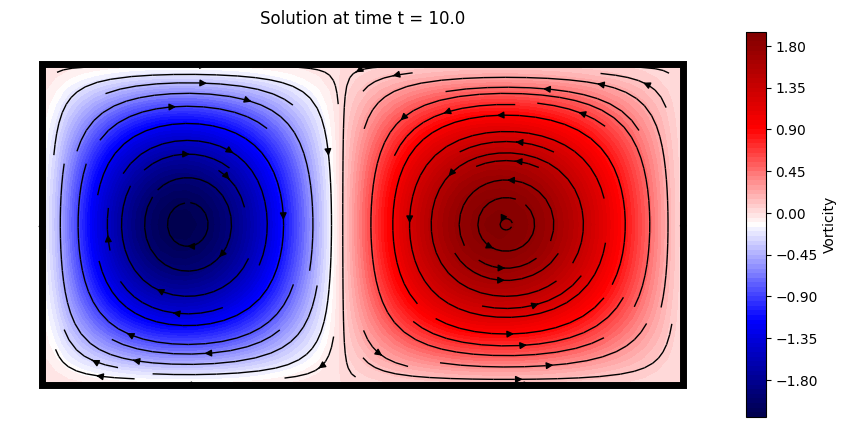
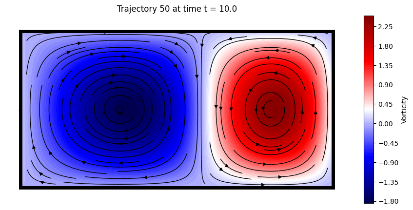
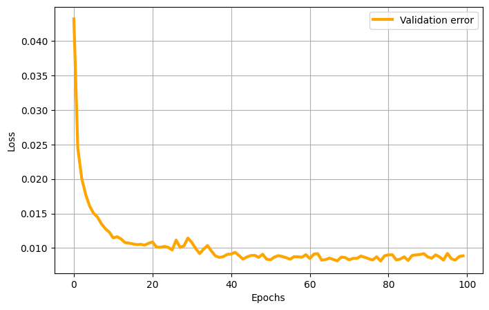
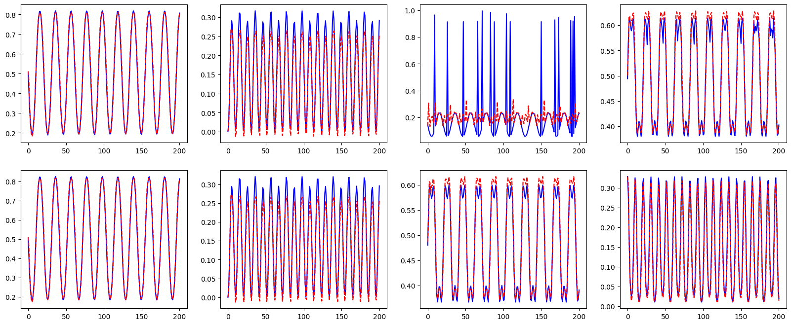
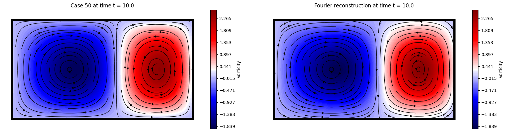
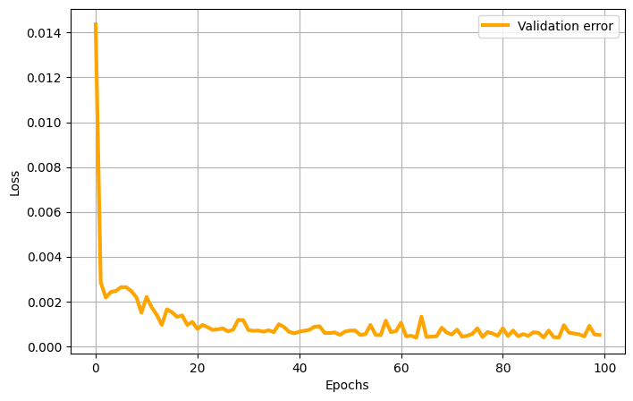
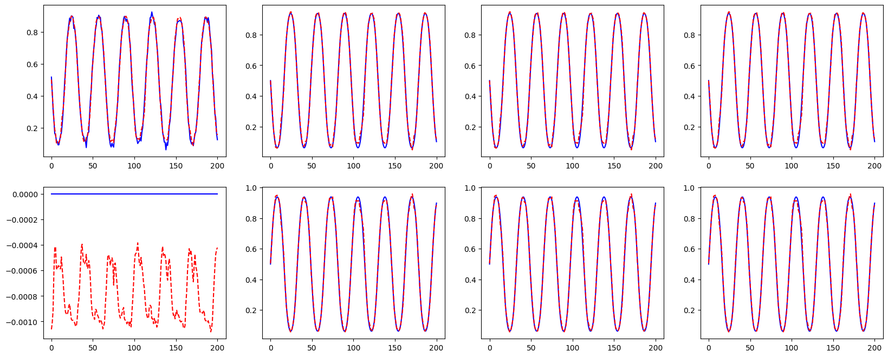
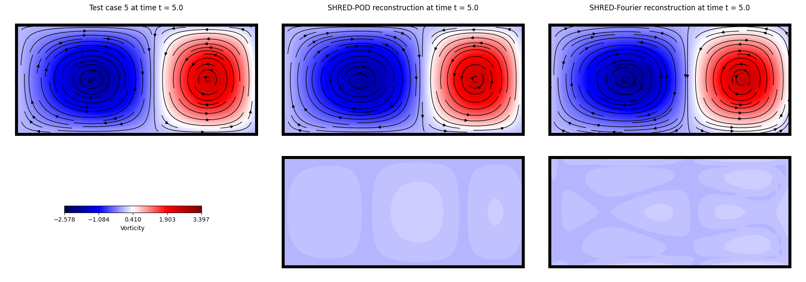

SHRED-ROM Tutorial on Double Gyre Flow#
Authors: Stefano Riva and Matteo Tomasetto

The double gyre flow is a time-dependent model for two counter-rotating vortices (gyres) in a rectangular domain. When time is introduced via a periodic perturbation, the central dividing line between the two gyres oscillates left and right, creating a time-varying velocity field that can lead to chaotic particle trajectories. The velocity field \(\mathbf{v} = [u, v]^T\) in the domain \([0, L_x] \times [0, L_y]\) and in the time interval \([0, T]\) is given by
where \(I\) is the intensity parameter, \(f(x, t) = \epsilon \sin(\omega t) x^2 + (1 - 2\epsilon \sin(\omega t)) x \), \(\epsilon\) and \(\omega\) are the perturbation amplitude and the frequency of the oscillation, respectively.
%load_ext autoreload
%autoreload 2
# PYSHRED
from pyshred import DataManager, SHRED, SHREDEngine, LSTM_Forecaster
# IMPORT LIBRARIES
import torch
import numpy as np
import matplotlib.pyplot as plt
c:\Tools\MiniConda\envs\datasci\lib\site-packages\pysindy\__init__.py:1: UserWarning: pkg_resources is deprecated as an API. See https://setuptools.pypa.io/en/latest/pkg_resources.html. The pkg_resources package is slated for removal as early as 2025-11-30. Refrain from using this package or pin to Setuptools<81.
from pkg_resources import DistributionNotFound
A function to compute the velocity components \(u\) and \(v\) is provided below.
# DEFINE THE SYSTEM SOLVER
def double_gyre_flow(amplitude, frequency, x, y, t):
'''
Solve the double gyre flow problem
Inputs
amplitude (`float`)
frequency (`float`)
horizontal discretization (`np.array[float]`, shape: (ny,))
vertical discretization (`np.array[float]`, shape: (nx,))
time vector (`np.array[float]`, shape: (ntimes,))
Output
horizontal velocity matrix (`np.array[float]`, shape: (ntimes, nx * ny)
vertical velocity matrix (`np.array[float]`, shape: (ntimes, nx * ny)
'''
xgrid, ygrid = np.meshgrid(x, y) # spatial grid
u = np.zeros((len(t), len(x), len(y))) # horizontal velocity
v = np.zeros((len(t), len(x), len(y))) # vertical velocity
intensity = 0.1 # intensity parameter
f = lambda x,t: amplitude * np.sin(frequency * t) * x**2 + x - 2 * amplitude * np.sin(frequency * t) * x
# compute solution
for i in range(len(t)):
u[i] = (-np.pi * intensity * np.sin(np.pi * f(xgrid, t[i])) * np.cos(np.pi * ygrid)).T
v[i] = (np.pi * intensity * np.cos(np.pi * f(xgrid, t[i])) * np.sin(np.pi * ygrid) * (2 * amplitude * np.sin(frequency * t[i]) * xgrid + 1.0 - 2 * amplitude * np.sin(frequency * t[i]))).T
return u, v
Let us look at an example of the double gyre flow with the following parameters:
Amplitude \(\epsilon = 0.25\)
Frequency \(\omega = 5\)
# SOLVE THE SYSTEM FOR A FIXED TRANSPORT TERM
amplitude = 0.25 # amplitude
frequency = 5.0 # frequency
# spatial discretization
nx = 50
ny = 25
Lx = 2.0
Ly = 1.0
x = np.linspace(0, Lx, nx)
y = np.linspace(0, Ly, ny)
nstate = len(x) * len(y)
# temporal discretization
dt = 0.05
T = 10.0
t = np.arange(0, T + dt, dt)
ntimes = len(t)
u, v = double_gyre_flow(amplitude, frequency, x, y, t)
Let us plot the solution, in terms of the vorticity field \(w = -\partial u / \partial y + \partial v / \partial x\)
# SOLUTION VISUALIZATION
from ipywidgets import interact, FloatSlider
import matplotlib.patches as patches
def vorticity(u, v):
dx = Lx / nx
dy = Ly / ny
du_dy = np.gradient(u, dy, axis = 1)
dv_dx = np.gradient(v, dx, axis = 0)
return dv_dx - du_dy
def plot_solution(time):
which_time = (np.abs(t - time)).argmin()
offset = 0.1
plt.figure(figsize = (10,5))
cont = plt.contourf(x, y, vorticity(u[which_time], v[which_time]).T, cmap = 'seismic', levels = 100)
plt.colorbar(cont, label='Vorticity', orientation='vertical', pad=0.04, aspect=20, fraction=0.05)
plt.streamplot(x, y, u[which_time].T, v[which_time].T, color='black', linewidth = 1, density = 1)
plt.axis('off')
plt.axis([0 - offset, Lx + offset, 0 - offset, Ly + offset])
plt.title(f'Solution at time t = {round(time, 3)}')
plt.grid(True)
plt.gca().add_patch(patches.Rectangle((0, 0), Lx, Ly, linewidth = 5, edgecolor = 'black', facecolor = 'none'))
# interact(plot_solution, time = FloatSlider(value = t[0], min = t[0], max = t[-1], step = (t[1]-t[0]), description='time', layout={'width': '400px', 'height': '50px'}))
plot_solution(t[-1])

Let us generate the snapshots by sampling the velocity field for parameters \(\epsilon\in [0,0.5]\), \(\omega \in [0.5, 2\pi]\) (randomly sampled).
# DATA GENERATION
amplitude_range = np.array([0.0, 0.5])
frequency_range = np.array([0.5, 2*np.pi])
# spatial discretization
nx = 50
ny = 25
Lx = 2.0
Ly = 1.0
x = np.linspace(0, Lx, nx)
y = np.linspace(0, Ly, ny)
nstate = len(x) * len(y)
# temporal discretization
dt = 0.05
T = 10.0
t = np.arange(0, T + dt, dt)
ntimes = len(t)
# training data generation
ntrajectories = 100
U = np.zeros((ntrajectories, ntimes, nx, ny))
V = np.zeros((ntrajectories, ntimes, nx, ny))
parameters = np.zeros((ntrajectories, ntimes, 2)) # store amplitude and frequency
for i in range(ntrajectories):
amplitude = (amplitude_range[1] - amplitude_range[0]) * np.random.rand() + amplitude_range[0]
frequency = (frequency_range[1] - frequency_range[0]) * np.random.rand() + frequency_range[0]
U[i], V[i] = double_gyre_flow(amplitude, frequency, x, y, t)
parameters[i, :, 0] = amplitude
parameters[i, :, 1] = frequency
Here a trajectory is visualized
# DATA VISUALIZATION
from ipywidgets import interact, IntSlider
def plot_data(which_trajectory, which_time):
offset = 0.1
plt.figure(figsize = (10,5))
cont = plt.contourf(x, y, vorticity(U[which_trajectory, which_time], V[which_trajectory, which_time]).T, cmap = 'seismic', levels = 100)
plt.colorbar(cont, label='Vorticity', orientation='vertical', pad=0.04, aspect=20, fraction=0.05)
plt.streamplot(x, y, U[which_trajectory, which_time].T, V[which_trajectory, which_time].T, color='black', linewidth = 1, density = 1)
plt.axis('off')
plt.axis([0 - offset, Lx + offset, 0 - offset, Ly + offset])
plt.title(f'Trajectory {which_trajectory} at time t = {round(t[which_time], 3)}')
plt.grid(True)
plt.gca().add_patch(patches.Rectangle((0, 0), Lx, Ly, linewidth = 5, edgecolor = 'black', facecolor = 'none'))
# interact(plot_data, which_trajectory = IntSlider(min = 0, max = ntrajectories - 1, step = 1, description='Trajectory'), which_time = IntSlider(min = 0, max = ntimes - 1, step = 1, description='Time step'));
plot_data(50, -1)

SHallow REcurrent Decoder networks-based Reduced Order Modeling (SHRED-ROM)#
Let us assume to have three sensors in the domain measuring the horizontal velocity \(u(x_s,y_s,t;\epsilon, \omega)\) over time. SHRED-ROM aims to reconstruct the temporal evolution of the entire velocity \(\mathbf{v}(x,y,t;\epsilon, \omega) = [u(x,y,t;\epsilon, \omega), v(x,y,t;\epsilon, \omega)]^T\) starting from the limited sensor measurements available. In general, SHRED-ROM combines a recurrent neural network (LSTM), which encodes the temporal history of sensor values in multiple parametric regimes, and a shallow decoder, which projects the LSTM prediction to the (possibly high-dimensional) state dimension. Note that, to enhance computational efficiency and memory usage, dimensionality reduction strategies (such as, e.g., POD) may be considered to compress the training snapshots.
Two different compression strategies are available in this tutorial:
POD: Proper Orthogonal Decomposition, which computes the low-rank approximation of the training snapshots.
Fourier: Fourier decomposition, which computes the Fourier coefficients of the training snapshots.
U = U.reshape(ntrajectories, ntimes, nstate)
V = V.reshape(ntrajectories, ntimes, nstate)
POD-based compressive training#
The ParametricDataManager is initialized
from pyshred import ParametricDataManager, SHRED, ParametricSHREDEngine
# Initialize ParametricSHREDDataManager
manager_pod = ParametricDataManager(
lags = 25,
train_size = 0.8,
val_size = 0.1,
test_size = 0.1,
)
import warnings
warnings.filterwarnings("ignore")
Let us add the different fields, the component \(u\) is the one we want to reconstruct, while \(v\) is indirectly reconstructed. The parameters \(\epsilon\) and \(\omega\) are included as output of the SHRED architecture.
manager_pod.add_data(
data=U, # 3D array (parametric_trajectories, timesteps, field_dim)
id="U", # Unique identifier for the dataset
random=3, # Randomly select 3 sensor locations
compress=4 # Spatial compression
)
## Since no random selection is specified for the second dataset, no measurement locations will be selected
manager_pod.add_data(
data=V,
id="V",
compress=4
)
## Add parameters to the manager
manager_pod.add_data(
data=parameters,
id='mu',
compress=False,
)
If you want to add noise to the measurements (zero-mean Gaussian), it can added as follows:
manager_pod.sensor_summary_df
| data id | sensor_number | type | loc/traj | |
|---|---|---|---|---|
| 0 | U | 0 | stationary (random) | (475,) |
| 1 | U | 1 | stationary (random) | (944,) |
| 2 | U | 2 | stationary (random) | (1163,) |
noise_std = 0.005
random_noise = np.random.normal(loc=0, scale=noise_std, size=manager_pod.sensor_measurements_df.shape)
manager_pod.sensor_measurements_df += random_noise
Let us prepare the data by splitting them into train, valid and test sets.
train_dataset, val_dataset, test_dataset = manager_pod.prepare()
Definition of the SHRED architecture
shred_pod = SHRED(
sequence_model="LSTM",
decoder_model="MLP",
latent_forecaster=None
)
Let us fit the SHRED architecture
val_errors_shredpod = shred_pod.fit(
train_dataset=train_dataset,
val_dataset=val_dataset,
num_epochs=100,
patience=50,
verbose=True,
)
Fitting SHRED...
Epoch 1: Average training loss = 0.053392
Validation MSE (epoch 1): 0.043212
Epoch 2: Average training loss = 0.032544
Validation MSE (epoch 2): 0.024448
Epoch 3: Average training loss = 0.023836
Validation MSE (epoch 3): 0.020105
Epoch 4: Average training loss = 0.020569
Validation MSE (epoch 4): 0.017764
Epoch 5: Average training loss = 0.020235
Validation MSE (epoch 5): 0.016091
Epoch 6: Average training loss = 0.017805
Validation MSE (epoch 6): 0.015052
Epoch 7: Average training loss = 0.016603
Validation MSE (epoch 7): 0.014485
Epoch 8: Average training loss = 0.015684
Validation MSE (epoch 8): 0.013516
Epoch 9: Average training loss = 0.014828
Validation MSE (epoch 9): 0.012803
Epoch 10: Average training loss = 0.014153
Validation MSE (epoch 10): 0.012308
Epoch 11: Average training loss = 0.012916
Validation MSE (epoch 11): 0.011462
Epoch 12: Average training loss = 0.012554
Validation MSE (epoch 12): 0.011643
Epoch 13: Average training loss = 0.012317
Validation MSE (epoch 13): 0.011317
Epoch 14: Average training loss = 0.011726
Validation MSE (epoch 14): 0.010781
Epoch 15: Average training loss = 0.011202
Validation MSE (epoch 15): 0.010718
Epoch 16: Average training loss = 0.011886
Validation MSE (epoch 16): 0.010599
Epoch 17: Average training loss = 0.010680
Validation MSE (epoch 17): 0.010494
Epoch 18: Average training loss = 0.010582
Validation MSE (epoch 18): 0.010536
Epoch 19: Average training loss = 0.010798
Validation MSE (epoch 19): 0.010416
Epoch 20: Average training loss = 0.012638
Validation MSE (epoch 20): 0.010685
Epoch 21: Average training loss = 0.011090
Validation MSE (epoch 21): 0.010882
Epoch 22: Average training loss = 0.010860
Validation MSE (epoch 22): 0.010139
Epoch 23: Average training loss = 0.009818
Validation MSE (epoch 23): 0.010109
Epoch 24: Average training loss = 0.009808
Validation MSE (epoch 24): 0.010227
Epoch 25: Average training loss = 0.010899
Validation MSE (epoch 25): 0.010099
Epoch 26: Average training loss = 0.009603
Validation MSE (epoch 26): 0.009711
Epoch 27: Average training loss = 0.009637
Validation MSE (epoch 27): 0.011148
Epoch 28: Average training loss = 0.010233
Validation MSE (epoch 28): 0.010103
Epoch 29: Average training loss = 0.009630
Validation MSE (epoch 29): 0.010315
Epoch 30: Average training loss = 0.009985
Validation MSE (epoch 30): 0.011453
Epoch 31: Average training loss = 0.009584
Validation MSE (epoch 31): 0.010798
Epoch 32: Average training loss = 0.010244
Validation MSE (epoch 32): 0.009911
Epoch 33: Average training loss = 0.009551
Validation MSE (epoch 33): 0.009187
Epoch 34: Average training loss = 0.009350
Validation MSE (epoch 34): 0.009849
Epoch 35: Average training loss = 0.009357
Validation MSE (epoch 35): 0.010362
Epoch 36: Average training loss = 0.009954
Validation MSE (epoch 36): 0.009548
Epoch 37: Average training loss = 0.008973
Validation MSE (epoch 37): 0.008852
Epoch 38: Average training loss = 0.008628
Validation MSE (epoch 38): 0.008646
Epoch 39: Average training loss = 0.009700
Validation MSE (epoch 39): 0.008757
Epoch 40: Average training loss = 0.008890
Validation MSE (epoch 40): 0.009087
Epoch 41: Average training loss = 0.009133
Validation MSE (epoch 41): 0.009129
Epoch 42: Average training loss = 0.009283
Validation MSE (epoch 42): 0.009379
Epoch 43: Average training loss = 0.009310
Validation MSE (epoch 43): 0.008910
Epoch 44: Average training loss = 0.008548
Validation MSE (epoch 44): 0.008397
Epoch 45: Average training loss = 0.009379
Validation MSE (epoch 45): 0.008696
Epoch 46: Average training loss = 0.008745
Validation MSE (epoch 46): 0.008912
Epoch 47: Average training loss = 0.008402
Validation MSE (epoch 47): 0.008942
Epoch 48: Average training loss = 0.009491
Validation MSE (epoch 48): 0.008642
Epoch 49: Average training loss = 0.009496
Validation MSE (epoch 49): 0.009101
Epoch 50: Average training loss = 0.008552
Validation MSE (epoch 50): 0.008392
Epoch 51: Average training loss = 0.008369
Validation MSE (epoch 51): 0.008288
Epoch 52: Average training loss = 0.008182
Validation MSE (epoch 52): 0.008690
Epoch 53: Average training loss = 0.009040
Validation MSE (epoch 53): 0.008894
Epoch 54: Average training loss = 0.009361
Validation MSE (epoch 54): 0.008774
Epoch 55: Average training loss = 0.008573
Validation MSE (epoch 55): 0.008599
Epoch 56: Average training loss = 0.008240
Validation MSE (epoch 56): 0.008375
Epoch 57: Average training loss = 0.009257
Validation MSE (epoch 57): 0.008748
Epoch 58: Average training loss = 0.008524
Validation MSE (epoch 58): 0.008730
Epoch 59: Average training loss = 0.008825
Validation MSE (epoch 59): 0.008662
Epoch 60: Average training loss = 0.008659
Validation MSE (epoch 60): 0.009045
Epoch 61: Average training loss = 0.008629
Validation MSE (epoch 61): 0.008477
Epoch 62: Average training loss = 0.008819
Validation MSE (epoch 62): 0.009109
Epoch 63: Average training loss = 0.009125
Validation MSE (epoch 63): 0.009190
Epoch 64: Average training loss = 0.008607
Validation MSE (epoch 64): 0.008255
Epoch 65: Average training loss = 0.008780
Validation MSE (epoch 65): 0.008314
Epoch 66: Average training loss = 0.008238
Validation MSE (epoch 66): 0.008542
Epoch 67: Average training loss = 0.008058
Validation MSE (epoch 67): 0.008330
Epoch 68: Average training loss = 0.008453
Validation MSE (epoch 68): 0.008142
Epoch 69: Average training loss = 0.008290
Validation MSE (epoch 69): 0.008686
Epoch 70: Average training loss = 0.008986
Validation MSE (epoch 70): 0.008616
Epoch 71: Average training loss = 0.008293
Validation MSE (epoch 71): 0.008285
Epoch 72: Average training loss = 0.007972
Validation MSE (epoch 72): 0.008500
Epoch 73: Average training loss = 0.008440
Validation MSE (epoch 73): 0.008502
Epoch 74: Average training loss = 0.008352
Validation MSE (epoch 74): 0.008844
Epoch 75: Average training loss = 0.008634
Validation MSE (epoch 75): 0.008645
Epoch 76: Average training loss = 0.008283
Validation MSE (epoch 76): 0.008440
Epoch 77: Average training loss = 0.008036
Validation MSE (epoch 77): 0.008269
Epoch 78: Average training loss = 0.007970
Validation MSE (epoch 78): 0.008736
Epoch 79: Average training loss = 0.007901
Validation MSE (epoch 79): 0.008116
Epoch 80: Average training loss = 0.008635
Validation MSE (epoch 80): 0.008874
Epoch 81: Average training loss = 0.008524
Validation MSE (epoch 81): 0.009008
Epoch 82: Average training loss = 0.008374
Validation MSE (epoch 82): 0.009022
Epoch 83: Average training loss = 0.008425
Validation MSE (epoch 83): 0.008268
Epoch 84: Average training loss = 0.008225
Validation MSE (epoch 84): 0.008397
Epoch 85: Average training loss = 0.007887
Validation MSE (epoch 85): 0.008727
Epoch 86: Average training loss = 0.008008
Validation MSE (epoch 86): 0.008191
Epoch 87: Average training loss = 0.008014
Validation MSE (epoch 87): 0.008919
Epoch 88: Average training loss = 0.008429
Validation MSE (epoch 88): 0.009004
Epoch 89: Average training loss = 0.008337
Validation MSE (epoch 89): 0.009056
Epoch 90: Average training loss = 0.008528
Validation MSE (epoch 90): 0.009185
Epoch 91: Average training loss = 0.008492
Validation MSE (epoch 91): 0.008710
Epoch 92: Average training loss = 0.008400
Validation MSE (epoch 92): 0.008518
Epoch 93: Average training loss = 0.008053
Validation MSE (epoch 93): 0.009015
Epoch 94: Average training loss = 0.007976
Validation MSE (epoch 94): 0.008710
Epoch 95: Average training loss = 0.008299
Validation MSE (epoch 95): 0.008247
Epoch 96: Average training loss = 0.007863
Validation MSE (epoch 96): 0.009222
Epoch 97: Average training loss = 0.007938
Validation MSE (epoch 97): 0.008448
Epoch 98: Average training loss = 0.007993
Validation MSE (epoch 98): 0.008244
Epoch 99: Average training loss = 0.008099
Validation MSE (epoch 99): 0.008777
Epoch 100: Average training loss = 0.008017
Validation MSE (epoch 100): 0.008872
Here the validation loss is plotted
plt.figure(figsize = (8,5))
plt.plot(val_errors_shredpod, 'orange', linewidth = 3, label = 'Validation error')
plt.xlabel('Epochs')
plt.ylabel('Loss')
plt.legend()
plt.grid(True)

Let us evaluate the SHRED model on the different sets
print(f"Train MSE: {shred_pod.evaluate(dataset=train_dataset):.3f}")
print(f"Val MSE: {shred_pod.evaluate(dataset=val_dataset):.3f}")
print(f"Test MSE: {shred_pod.evaluate(dataset=test_dataset):.3f}")
Train MSE: 0.008
Val MSE: 0.009
Test MSE: 0.007
Let us check the reconstruction of the POD coefficients
which_param = 0 # Index of the parameter to visualize
fig, axs = plt.subplots(2, 4, figsize=(20, 8))
for i in range(4):
axs[0, i].plot(test_dataset.Y[ntimes * which_param:ntimes * (which_param + 1), i].cpu().numpy(), 'b', label='True U')
axs[0, i].plot(shred_pod(test_dataset.X)[ntimes * which_param:ntimes * (which_param + 1), i].cpu().detach().numpy(), 'r--', label='True U')
axs[1, i].plot(test_dataset.Y[ntimes * which_param:ntimes * (which_param + 1), i + 4].cpu().numpy(), 'b', label='True V')
axs[1, i].plot(shred_pod(test_dataset.X)[ntimes * which_param:ntimes * (which_param + 1), i + 4].cpu().detach().numpy(), 'r--', label='True V')

Let us check the reconstruction of the double gyre flow
Fourier-based compressive training#
freq_cutoff = 0.05
freq_x = np.fft.fftfreq(nx)
freq_y = np.fft.fftfreq(ny)
freq_x_grid, freq_y_grid = np.meshgrid(freq_x, freq_y)
mask_x = np.abs(freq_x_grid.T) <= freq_cutoff
# Transform the data to frequency domain - U
U_fft = np.fft.fft2(U.reshape(ntrajectories, ntimes, nx, ny), axes = (-2, -1))
U_fft[:,:,~mask_x] = 0
U_proj = U_fft[:,:,mask_x]
U_proj_real = np.real(U_proj)
U_proj_imag = np.imag(U_proj)
Fourier_modes_x = U_proj.shape[-1]
# Transform the data to frequency domain - V
mask_y = np.abs(freq_y_grid.T) <= freq_cutoff
V_fft = np.fft.fft2(V.reshape(ntrajectories, ntimes, nx, ny), axes = (-2, -1))
V_fft[:,:,~mask_y] = 0
V_proj = V_fft[:,:,mask_y]
V_proj_real = np.real(V_proj)
V_proj_imag = np.imag(V_proj)
Fourier_modes_y = V_proj.shape[-1]
Let us plot the projected and reconstructed velocity fields
U_recons = np.fft.ifft2(U_fft).real
V_recons = np.fft.ifft2(V_fft).real
def plot_fourier_data(which_test_trajectory, which_time):
offset = 0.1
_min = vorticity(U[which_test_trajectory, which_time].reshape(nx, ny), V[which_test_trajectory, which_time].reshape(nx, ny)).min()
_max = vorticity(U[which_test_trajectory, which_time].reshape(nx, ny), V[which_test_trajectory, which_time].reshape(nx, ny)).max()
levels = np.linspace(_min, _max, 100) * 1.05
plt.figure(figsize = (20,5))
plt.subplot(1, 2, 1)
cont = plt.contourf(x, y, vorticity(U[which_test_trajectory, which_time].reshape(nx, ny), V[which_test_trajectory, which_time].reshape(nx, ny)).T, cmap = 'seismic', levels = levels)
plt.streamplot(x, y, U[which_test_trajectory, which_time].reshape(nx, ny).T, V[which_test_trajectory, which_time].reshape(nx, ny).T, color='black', linewidth = 1, density = 1)
plt.axis('off')
plt.axis([0 - offset, Lx + offset, 0 - offset, Ly + offset])
plt.title(f'Case {which_test_trajectory} at time t = {round(t[which_time], 3)}')
plt.grid(True)
plt.gca().add_patch(patches.Rectangle((0, 0), Lx, Ly, linewidth = 5, edgecolor = 'black', facecolor = 'none'))
plt.colorbar(cont, label='Vorticity', orientation='vertical', pad=0.04, aspect=20, fraction=0.05)
plt.subplot(1, 2, 2)
cont = plt.contourf(x, y, vorticity(U_recons[which_test_trajectory, which_time].reshape(nx, ny), V_recons[which_test_trajectory, which_time].reshape(nx, ny)).T, cmap = 'seismic', levels = levels)
plt.streamplot(x, y, U_recons[which_test_trajectory, which_time].reshape(nx, ny).T, V_recons[which_test_trajectory, which_time].reshape(nx, ny).T, color='black', linewidth = 1, density = 1)
plt.axis('off')
plt.axis([0 - offset, Lx + offset, 0 - offset, Ly + offset])
plt.title(f'Fourier reconstruction at time t = {round(t[which_time], 3)}')
plt.grid(True)
plt.gca().add_patch(patches.Rectangle((0, 0), Lx, Ly, linewidth = 5, edgecolor = 'black', facecolor = 'none'))
plt.colorbar(cont, label='Vorticity', orientation='vertical', pad=0.04, aspect=20, fraction=0.05)
# interact(plot_fourier_data, which_test_trajectory = IntSlider(min = 0, max = ntrajectories - 1, step = 1, description='Test case'), which_time = IntSlider(min = 0, max = ntimes - 1, step = 1, description='Time step'));
plot_fourier_data(50, -1)

Let us compute the measurement field from \(u\) using the same input positions as before
sens_locs = [manager_pod.sensor_summary_df['loc/traj'][i][0] for i in range(len(manager_pod.sensor_summary_df))]
measurements = U[:, :, sens_locs]
# Add noise to the measurements
measurements += np.random.normal(loc=0, scale=noise_std, size=measurements.shape)
Let us initialize the ParametricDataManager for Fourier-based training
manager_fourier = ParametricDataManager(
lags = 25,
train_size = 0.8,
val_size = 0.1,
test_size = 0.1
)
Let us add the different fields, the component \(u\) is the one we want to reconstruct, while \(v\) is indirectly reconstructed. The parameters \(\epsilon\) and \(\omega\) are included as output of the SHRED architecture.
# Real and imaginary parts have to be added separately
manager_fourier.add_data(
data=U_proj_real,
id="Ufft_real",
measurements=measurements, # Use the measurements with noise already computed
compress=False
)
manager_fourier.add_data(
data=U_proj_imag,
id="Ufft_imag",
compress=False
)
# Add the second dataset (V) in the same way
manager_fourier.add_data(
data=V_proj_real,
id="Vfft_real",
compress=False
)
manager_fourier.add_data(
data=V_proj_imag,
id="Vfft_imag",
compress=False
)
## Add parameters to the manager
manager_fourier.add_data(
data=parameters,
id='mu',
compress=False,
)
Let us prepare the data by splitting them into train, valid and test sets.
train_dataset, val_dataset, test_dataset= manager_fourier.prepare()
Definition of the SHRED architecture
shred_fourier = SHRED(
sequence_model="LSTM",
decoder_model="MLP",
latent_forecaster=None
)
Let us fit the SHRED architecture
val_errors_shredfourier = shred_fourier.fit(
train_dataset=train_dataset,
val_dataset=val_dataset,
num_epochs=100,
patience=50,
verbose=True,
)
Fitting SHRED...
Epoch 1: Average training loss = 0.053214
Validation MSE (epoch 1): 0.014368
Epoch 2: Average training loss = 0.009338
Validation MSE (epoch 2): 0.002854
Epoch 3: Average training loss = 0.003565
Validation MSE (epoch 3): 0.002174
Epoch 4: Average training loss = 0.002810
Validation MSE (epoch 4): 0.002424
Epoch 5: Average training loss = 0.002591
Validation MSE (epoch 5): 0.002467
Epoch 6: Average training loss = 0.002366
Validation MSE (epoch 6): 0.002638
Epoch 7: Average training loss = 0.002098
Validation MSE (epoch 7): 0.002637
Epoch 8: Average training loss = 0.002073
Validation MSE (epoch 8): 0.002461
Epoch 9: Average training loss = 0.001950
Validation MSE (epoch 9): 0.002186
Epoch 10: Average training loss = 0.001827
Validation MSE (epoch 10): 0.001497
Epoch 11: Average training loss = 0.001761
Validation MSE (epoch 11): 0.002201
Epoch 12: Average training loss = 0.001868
Validation MSE (epoch 12): 0.001741
Epoch 13: Average training loss = 0.001829
Validation MSE (epoch 13): 0.001406
Epoch 14: Average training loss = 0.001564
Validation MSE (epoch 14): 0.000949
Epoch 15: Average training loss = 0.001443
Validation MSE (epoch 15): 0.001649
Epoch 16: Average training loss = 0.001596
Validation MSE (epoch 16): 0.001515
Epoch 17: Average training loss = 0.001473
Validation MSE (epoch 17): 0.001312
Epoch 18: Average training loss = 0.001542
Validation MSE (epoch 18): 0.001377
Epoch 19: Average training loss = 0.001395
Validation MSE (epoch 19): 0.000952
Epoch 20: Average training loss = 0.001472
Validation MSE (epoch 20): 0.001084
Epoch 21: Average training loss = 0.001362
Validation MSE (epoch 21): 0.000774
Epoch 22: Average training loss = 0.001382
Validation MSE (epoch 22): 0.000952
Epoch 23: Average training loss = 0.001441
Validation MSE (epoch 23): 0.000849
Epoch 24: Average training loss = 0.001232
Validation MSE (epoch 24): 0.000727
Epoch 25: Average training loss = 0.001298
Validation MSE (epoch 25): 0.000755
Epoch 26: Average training loss = 0.001199
Validation MSE (epoch 26): 0.000796
Epoch 27: Average training loss = 0.001209
Validation MSE (epoch 27): 0.000661
Epoch 28: Average training loss = 0.001163
Validation MSE (epoch 28): 0.000740
Epoch 29: Average training loss = 0.001612
Validation MSE (epoch 29): 0.001174
Epoch 30: Average training loss = 0.001284
Validation MSE (epoch 30): 0.001166
Epoch 31: Average training loss = 0.001203
Validation MSE (epoch 31): 0.000725
Epoch 32: Average training loss = 0.001064
Validation MSE (epoch 32): 0.000688
Epoch 33: Average training loss = 0.001235
Validation MSE (epoch 33): 0.000697
Epoch 34: Average training loss = 0.001176
Validation MSE (epoch 34): 0.000649
Epoch 35: Average training loss = 0.001130
Validation MSE (epoch 35): 0.000714
Epoch 36: Average training loss = 0.001193
Validation MSE (epoch 36): 0.000629
Epoch 37: Average training loss = 0.001058
Validation MSE (epoch 37): 0.000981
Epoch 38: Average training loss = 0.001134
Validation MSE (epoch 38): 0.000861
Epoch 39: Average training loss = 0.001018
Validation MSE (epoch 39): 0.000646
Epoch 40: Average training loss = 0.001256
Validation MSE (epoch 40): 0.000579
Epoch 41: Average training loss = 0.001010
Validation MSE (epoch 41): 0.000648
Epoch 42: Average training loss = 0.001218
Validation MSE (epoch 42): 0.000690
Epoch 43: Average training loss = 0.001235
Validation MSE (epoch 43): 0.000734
Epoch 44: Average training loss = 0.000943
Validation MSE (epoch 44): 0.000873
Epoch 45: Average training loss = 0.001144
Validation MSE (epoch 45): 0.000890
Epoch 46: Average training loss = 0.001066
Validation MSE (epoch 46): 0.000592
Epoch 47: Average training loss = 0.001009
Validation MSE (epoch 47): 0.000591
Epoch 48: Average training loss = 0.001000
Validation MSE (epoch 48): 0.000613
Epoch 49: Average training loss = 0.000923
Validation MSE (epoch 49): 0.000506
Epoch 50: Average training loss = 0.000933
Validation MSE (epoch 50): 0.000656
Epoch 51: Average training loss = 0.001386
Validation MSE (epoch 51): 0.000699
Epoch 52: Average training loss = 0.001073
Validation MSE (epoch 52): 0.000702
Epoch 53: Average training loss = 0.000911
Validation MSE (epoch 53): 0.000505
Epoch 54: Average training loss = 0.000926
Validation MSE (epoch 54): 0.000537
Epoch 55: Average training loss = 0.000932
Validation MSE (epoch 55): 0.000949
Epoch 56: Average training loss = 0.001036
Validation MSE (epoch 56): 0.000506
Epoch 57: Average training loss = 0.000810
Validation MSE (epoch 57): 0.000494
Epoch 58: Average training loss = 0.000988
Validation MSE (epoch 58): 0.001143
Epoch 59: Average training loss = 0.001064
Validation MSE (epoch 59): 0.000634
Epoch 60: Average training loss = 0.000976
Validation MSE (epoch 60): 0.000669
Epoch 61: Average training loss = 0.001232
Validation MSE (epoch 61): 0.001047
Epoch 62: Average training loss = 0.001322
Validation MSE (epoch 62): 0.000439
Epoch 63: Average training loss = 0.000888
Validation MSE (epoch 63): 0.000468
Epoch 64: Average training loss = 0.000788
Validation MSE (epoch 64): 0.000383
Epoch 65: Average training loss = 0.000991
Validation MSE (epoch 65): 0.001318
Epoch 66: Average training loss = 0.001477
Validation MSE (epoch 66): 0.000416
Epoch 67: Average training loss = 0.000773
Validation MSE (epoch 67): 0.000427
Epoch 68: Average training loss = 0.000764
Validation MSE (epoch 68): 0.000449
Epoch 69: Average training loss = 0.000971
Validation MSE (epoch 69): 0.000827
Epoch 70: Average training loss = 0.001155
Validation MSE (epoch 70): 0.000603
Epoch 71: Average training loss = 0.000876
Validation MSE (epoch 71): 0.000527
Epoch 72: Average training loss = 0.000976
Validation MSE (epoch 72): 0.000741
Epoch 73: Average training loss = 0.000947
Validation MSE (epoch 73): 0.000429
Epoch 74: Average training loss = 0.000782
Validation MSE (epoch 74): 0.000468
Epoch 75: Average training loss = 0.000982
Validation MSE (epoch 75): 0.000553
Epoch 76: Average training loss = 0.000833
Validation MSE (epoch 76): 0.000803
Epoch 77: Average training loss = 0.001219
Validation MSE (epoch 77): 0.000414
Epoch 78: Average training loss = 0.000833
Validation MSE (epoch 78): 0.000634
Epoch 79: Average training loss = 0.001068
Validation MSE (epoch 79): 0.000565
Epoch 80: Average training loss = 0.000867
Validation MSE (epoch 80): 0.000467
Epoch 81: Average training loss = 0.000816
Validation MSE (epoch 81): 0.000801
Epoch 82: Average training loss = 0.001068
Validation MSE (epoch 82): 0.000459
Epoch 83: Average training loss = 0.000783
Validation MSE (epoch 83): 0.000701
Epoch 84: Average training loss = 0.001152
Validation MSE (epoch 84): 0.000449
Epoch 85: Average training loss = 0.000783
Validation MSE (epoch 85): 0.000539
Epoch 86: Average training loss = 0.000833
Validation MSE (epoch 86): 0.000465
Epoch 87: Average training loss = 0.000915
Validation MSE (epoch 87): 0.000623
Epoch 88: Average training loss = 0.001241
Validation MSE (epoch 88): 0.000599
Epoch 89: Average training loss = 0.000789
Validation MSE (epoch 89): 0.000390
Epoch 90: Average training loss = 0.000811
Validation MSE (epoch 90): 0.000701
Epoch 91: Average training loss = 0.001071
Validation MSE (epoch 91): 0.000406
Epoch 92: Average training loss = 0.000641
Validation MSE (epoch 92): 0.000391
Epoch 93: Average training loss = 0.000959
Validation MSE (epoch 93): 0.000939
Epoch 94: Average training loss = 0.001173
Validation MSE (epoch 94): 0.000604
Epoch 95: Average training loss = 0.000865
Validation MSE (epoch 95): 0.000566
Epoch 96: Average training loss = 0.000913
Validation MSE (epoch 96): 0.000532
Epoch 97: Average training loss = 0.000797
Validation MSE (epoch 97): 0.000440
Epoch 98: Average training loss = 0.001028
Validation MSE (epoch 98): 0.000908
Epoch 99: Average training loss = 0.001091
Validation MSE (epoch 99): 0.000527
Epoch 100: Average training loss = 0.000909
Validation MSE (epoch 100): 0.000503
Here the validation loss is plotted
plt.figure(figsize = (8,5))
plt.plot(val_errors_shredfourier, 'orange', linewidth = 3, label = 'Validation error')
plt.xlabel('Epochs')
plt.ylabel('Loss')
plt.legend()
plt.grid(True)

Let us evaluate the SHRED model on the different sets
print(f"Train MSE: {shred_fourier.evaluate(dataset=train_dataset):.5f}")
print(f"Val MSE: {shred_fourier.evaluate(dataset=val_dataset):.5f}")
print(f"Test MSE: {shred_fourier.evaluate(dataset=test_dataset):.5f}")
Train MSE: 0.00050
Val MSE: 0.00050
Test MSE: 0.00054
Let us check the reconstruction of the Fourier coefficients
which_param = 5 # Index of the parameter to visualize
fig, axs = plt.subplots(2, 4, figsize=(20, 8))
for i in range(4):
axs[0, i].plot(test_dataset.Y[ntimes * which_param:ntimes * (which_param + 1), i].cpu().numpy(), 'b', label='True U')
axs[0, i].plot(shred_fourier(test_dataset.X)[ntimes * which_param:ntimes * (which_param + 1), i].cpu().detach().numpy(), 'r--', label='True U')
axs[1, i].plot(test_dataset.Y[ntimes * which_param:ntimes * (which_param + 1), i + 125].cpu().numpy(), 'b', label='True V')
axs[1, i].plot(shred_fourier(test_dataset.X)[ntimes * which_param:ntimes * (which_param + 1), i + 125].cpu().detach().numpy(), 'r--', label='True V')

Comparison of POD and Fourier-based training#
Let us define the different engines for evaluations
engine_pod = ParametricSHREDEngine(manager_pod, shred_pod)
engine_fourier = ParametricSHREDEngine(manager_fourier, shred_fourier)
Let us compute the different output of each SHRED model:
POD-based is directly embedded in the SHRED model, thus the output is the reconstructed fields
Fourier-based is not directly embedded in the SHRED model, thus the output is the Fourier coefficients of the reconstructed fields
ntest = manager_fourier.test_indices.shape[0]
Utest = U[manager_pod.test_indices] # assumed that fourier and pod test indices are the same
Vtest = V[manager_pod.test_indices] # assumed that fourier and pod test indices are the same
# POD
pod_test_reconstruction = engine_pod.decode(engine_pod.sensor_to_latent(manager_pod.test_sensor_measurements))
pod_test_reconstruction['U'] = pod_test_reconstruction['U'].reshape(ntest, ntimes, -1)
pod_test_reconstruction['V'] = pod_test_reconstruction['V'].reshape(ntest, ntimes, -1)
# Fourier
fourier_coeffs_test_reconstruction = engine_fourier.decode(engine_fourier.sensor_to_latent(manager_fourier.test_sensor_measurements))
def fourier_to_rec(fourier_coeff, mask):
_proj_hat = fourier_coeff.reshape(ntest, ntimes, -1)
_fft_hat = np.zeros((ntest, ntimes, nx, ny), dtype=np.complex128)
_fft_hat[:,:,mask] = _proj_hat
return np.fft.ifft2(_fft_hat).real
fourier_test_reconstrucion = dict()
fourier_test_reconstrucion['U'] = fourier_to_rec(fourier_coeffs_test_reconstruction['Ufft_real'] + 1j * fourier_coeffs_test_reconstruction['Ufft_imag'], mask_x).reshape(ntest, ntimes, -1)
fourier_test_reconstrucion['V'] = fourier_to_rec(fourier_coeffs_test_reconstruction['Vfft_real'] + 1j * fourier_coeffs_test_reconstruction['Vfft_imag'], mask_y).reshape(ntest, ntimes, -1)
fourier_test_reconstrucion['mu'] = fourier_coeffs_test_reconstruction['mu'].reshape(ntest, ntimes, -1)
Let us reshape all the outputs to be compatible with the plotting functions
Utest = Utest.reshape(ntest, ntimes, nx, ny)
Vtest = Vtest.reshape(ntest, ntimes, nx, ny)
# POD
pod_test_reconstruction['U'] = pod_test_reconstruction['U'].reshape(ntest, ntimes, nx, ny)
pod_test_reconstruction['V'] = pod_test_reconstruction['V'].reshape(ntest, ntimes, nx, ny)
# Fourier
fourier_test_reconstrucion['U'] = fourier_test_reconstrucion['U'].reshape(ntest, ntimes, nx, ny)
fourier_test_reconstrucion['V'] = fourier_test_reconstrucion['V'].reshape(ntest, ntimes, nx, ny)
Let us plot the reconstructed fields for both POD and Fourier-based training
def plot_shred_reconstruction(which_test_trajectory, which_time):
offset = 0.1
fig, axs = plt.subplots(2, 3, figsize=(8*3, 8))
levels = np.linspace(vorticity(Utest[which_test_trajectory, which_time], Vtest[which_test_trajectory, which_time]).min(),
vorticity(Utest[which_test_trajectory, which_time], Vtest[which_test_trajectory, which_time]).max(),
100) * 1.4
cont = axs[0,0].contourf(x,y, vorticity(Utest[which_test_trajectory, which_time], Vtest[which_test_trajectory, which_time]).T, cmap = 'seismic', levels = levels)
axs[0,0].streamplot(x, y, Utest[which_test_trajectory, which_time].T, Vtest[which_test_trajectory, which_time].T, color='black', linewidth = 1, density = 1)
axs[0,1].contourf(x, y, vorticity(pod_test_reconstruction['U'][which_test_trajectory, which_time], pod_test_reconstruction['V'][which_test_trajectory, which_time]).T, cmap = 'seismic', levels = levels)
axs[0,1].streamplot(x, y, pod_test_reconstruction['U'][which_test_trajectory, which_time].T, pod_test_reconstruction['V'][which_test_trajectory, which_time].T, color='black', linewidth = 1, density = 1)
axs[0,2].contourf(x, y, vorticity(fourier_test_reconstrucion['U'][which_test_trajectory, which_time], fourier_test_reconstrucion['V'][which_test_trajectory, which_time]).T, cmap = 'seismic', levels = levels)
axs[0,2].streamplot(x, y, fourier_test_reconstrucion['U'][which_test_trajectory, which_time].T, fourier_test_reconstrucion['V'][which_test_trajectory, which_time].T, color='black', linewidth = 1, density = 1)
for ax in axs[0]:
ax.axis('off')
ax.axis([0 - offset, Lx + offset, 0 - offset, Ly + offset])
ax.grid()
ax.add_patch(patches.Rectangle((0, 0), Lx, Ly, linewidth = 5, edgecolor = 'black', facecolor = 'none'))
cbar = fig.colorbar(cont, ax=axs[1,0], label='Vorticity', orientation='horizontal', pad=0.04, aspect=20, fraction=0.05)
cbar.ax.set_xticks(np.linspace(levels.min(), levels.max(), 5))
axs[1,0].axis('off')
axs[1,1].contourf(x, y, np.abs(vorticity(pod_test_reconstruction['U'][which_test_trajectory, which_time], pod_test_reconstruction['V'][which_test_trajectory, which_time]).T -
vorticity(Utest[which_test_trajectory, which_time], Vtest[which_test_trajectory, which_time]).T), cmap='seismic', levels=levels)
axs[1,2].contourf(x, y, np.abs(vorticity(fourier_test_reconstrucion['U'][which_test_trajectory, which_time], fourier_test_reconstrucion['V'][which_test_trajectory, which_time]).T -
vorticity(Utest[which_test_trajectory, which_time], Vtest[which_test_trajectory, which_time]).T), cmap='seismic', levels=levels)
axs[1,1].axis('off')
axs[1,2].axis('off')
axs[1,1].add_patch(patches.Rectangle((0, 0), Lx, Ly, linewidth = 5, edgecolor = 'black', facecolor = 'none'))
axs[1,2].add_patch(patches.Rectangle((0, 0), Lx, Ly, linewidth = 5, edgecolor = 'black', facecolor = 'none'))
axs[1,1].axis([0 - offset, Lx + offset, 0 - offset, Ly + offset])
axs[1,2].axis([0 - offset, Lx + offset, 0 - offset, Ly + offset])
axs[0, 0].set_title(f'Test case {which_test_trajectory} at time t = {round(t[which_time], 3)}')
axs[0, 1].set_title(f'SHRED-POD reconstruction at time t = {round(t[which_time], 3)}')
axs[0, 2].set_title(f'SHRED-Fourier reconstruction at time t = {round(t[which_time], 3)}')
fig.subplots_adjust(wspace=0.01, hspace=0.01)
cbar.ax.set_position([0.15, 0.3, 0.2, 0.02])
# interact(plot_shred_reconstruction, which_test_trajectory = IntSlider(value = 0, min = 0, max = ntest - 1, description='Test case'), which_time = IntSlider(min = 0, max = ntimes - 1, step = 1, description='Time step'));
plot_shred_reconstruction(5, 100)
